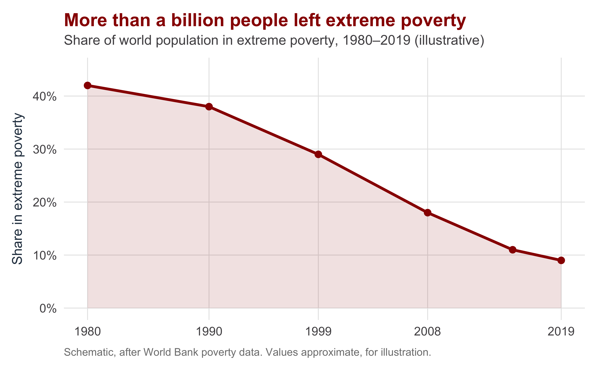
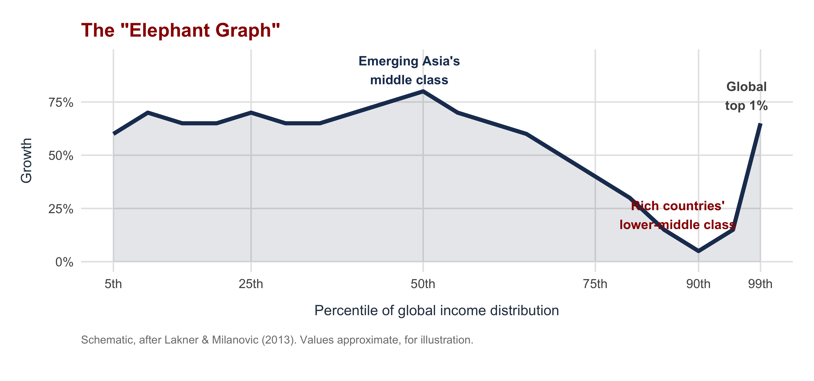

| Section | What we'll cover |
|---|---|
| 1 · The Achievements | Poverty's historic fall, emerging Asia, and global convergence |
| 2 · The Distributional Challenge | Globalization's losers, the China shock, inequality within rich states |
| 3 · The Sustainability Challenge | Growth against climate limits, and the global public-goods problem |
| 4 · The Political Backlash | Populism, economic nationalism, and the fraying liberal order |
| 5 · Is the Liberal Order Sustainable? | Oatley's scenarios: reform, fragmentation, or managed globalization |
| 6 · Course Capstone: The Central Analytic Frame | Society-centered vs. state-centered, across the whole course |
| 7 · Closing & the Final Exam | What we built, and how the cumulative final is structured |
Achievements and Challenges of Global Capitalism
INTL 503 | Chapter 16
Professor Sarah Bauerle Danzman
July 30, 2026
Today’s Plan — Our Last Session
Today’s Big Question
Global capitalism has delivered historic gains — can the system that produced them survive the backlash against them?
Before We Start: A Ten-Minute Write
Writing prompt. Global capitalism has lifted more people out of poverty than any system in history — and it is also more politically unpopular in rich democracies than at any point since the 1930s.
Before today’s lecture makes the case for both sides in detail: which force do you think wins over the next twenty years — continued, if uneven, integration, or a genuine retreat into economic nationalism? Give one piece of evidence for your prediction, drawn from anywhere in the course.
Write for about ten minutes from intuition — you don’t need today’s evidence yet. We’ll come back to what you wrote when we reach Section 5.
The Achievements
Section 1
The Headline Achievement: Poverty’s Historic Fall

The single biggest fact of our era. The share of humanity in extreme poverty fell from roughly 40% around 1980 to under 10% by the late 2010s — well over a billion people.
This is not the whole story, and we will complicate it. But any honest account of global capitalism has to start here.
Where the Gains Came From: Emerging Asia and Convergence
Two structural shifts drove the gains:
- The rise of emerging Asia — China above all, then India and Southeast Asia — pulled hundreds of millions into the global middle class
- Growth through integration — these economies grew by joining world trade and investment flows, not by withdrawing from them
- Cross-country convergence — for the first time, large poor countries grew faster than rich ones, narrowing the gap between nations
The mechanism is our whole course. Trade access (Chs. 2–7), inward FDI (Chs. 8–9), a functioning monetary order (Chs. 10–13), and capital inflows (Chs. 14–15) were the channels of catch-up.
Falling between-country inequality is the flip side of the poverty story. The world’s poor were concentrated in the countries that grew fastest.
The Distributional Challenge
Section 2
The Politics of Domestic Winners and Losers
We have known since Chapter 4 that trade has distributional effects:
- Trade raises aggregate welfare but redistributes — some groups gain, others lose
- The losses are concentrated (a closed factory, a hollowed-out town); the gains are diffuse (slightly cheaper goods for everyone)
- The theory never promised that everyone wins — only that winners could compensate losers
- In practice, compensation rarely happened
This is not a surprise — it is Chapter 4. The society-centered approach told us exactly who would resist trade and why. The distributional challenge is that prediction coming true.
The political problem: concentrated losers organize; diffuse winners do not. That asymmetry drives the backlash in Section 4.

The China Shock: When the Prediction Got Sharp
China’s entry into world trade (WTO accession, 2001) was a shock of unusual size and speed:
- Research on the U.S. “China shock” finds sharp, persistent local losses where import competition hit
- Affected communities saw lower employment and wages that did not bounce back as the textbook adjustment story predicted
- Workers did not smoothly relocate to new jobs and new places
Why it mattered politically. The losses were geographically concentrated, slow to heal, and clearly attributable to trade — the ideal fuel for an anti-globalization politics.
The aggregate gains from China trade were still large. The point is distribution and adjustment, not that trade was a mistake.
The Two Inequalities, Side by Side
| Between countries | Within rich countries | |
|---|---|---|
| What it measures | Income gaps between countries | Income gaps inside advanced economies |
| Direction since ~1980 | Narrowed — convergence | Widened in many rich democracies |
| Who it helped / hurt | Helped the global poor in fast-growing emerging economies | Hurt lower-skill workers in import-competing regions |
| Political consequence | Underwrites the 'globalization works' case | Fuels the backlash inside the system's own core |
The paradox in one line: the same era that made the world more equal between nations made many rich nations less equal within themselves. That tension is the politics of globalization.
The Sustainability Challenge
Section 3
Growth Against the Planet’s Limits
The growth that lifted billions also carries an ecological bill:
- Rising output and consumption drove rising greenhouse-gas emissions and resource use
- Climate change is the defining case, but not the only one — biodiversity loss, water stress, pollution
- The very industrialization that powered catch-up growth is the largest single driver of the emissions problem
The hard tension. We cannot simply tell developing countries to stop growing — growth is how poverty fell. But the historical path of growth is environmentally unsustainable.
This is not anti-growth doom-mongering. It is a genuine trade-off the next generation of policy has to manage, not wish away.
Why Climate Is So Hard: A Global Public Good
Climate stability is a global public good — and that creates a brutal collective-action problem:
- Non-excludable: a stable climate benefits everyone, payer or not
- Free-riding: every state would prefer that others bear the cost of cutting emissions
- No world government can compel cooperation — the same anarchy problem from the trade and monetary chapters
- Costs are paid now and locally; benefits are diffuse, global, and in the future
You already have this framework. This is the same cooperation-under-anarchy problem as the WTO (Ch. 3) and monetary cooperation (Ch. 11) — now with the highest possible stakes.
That is why climate agreements are voluntary and underpowered: there is no enforcer, only the same fragile cooperation we studied all term.
The Political Backlash
Section 4
The Backlash Against the Open Economy
Since the 2010s, a broad reaction against economic openness:
- Populism — channeling the grievances of globalization’s losers against elites and outsiders
- Economic nationalism — tariffs, “buy national,” reshoring, industrial policy
- The return of protectionism — the U.S.–China trade war, broad tariff regimes, supply-chain “de-risking”
- A fraying of the rules-based liberal order: a stalled WTO, weakened dispute settlement (Ch. 3)
The throughline of the course. The backlash is the political demand generated by the distributional losses of Section 2, expressed through the institutions of Chapters 2–5.
The order was always political, not natural. It was built by states and sustained by a coalition — and coalitions can come apart.
🎧 Today’s podcast — Trade Talks ep. 27, Dani Rodrik on “What Are Trade Deals For?” — the trilemma behind the backlash, from the economist who saw it coming.
Student Presentation
Over to today’s presenter
Walter (2021) — “The Backlash Against Globalization” · Annual Review of Political Science 24
Presenter: ______________________ · Q&A and class discussion to follow
The definitive review of the backlash literature — and its central claim cuts against the popular story: mass opinion has not swung sharply against globalization. The backlash is a politicization: entrepreneurs mobilizing economic losers and cultural grievance into backlash politics, with real consequences — deglobalization pressure, contested institutions, and harder international cooperation.
Connecting Back: Coercion and the State-Centered Turn
The backlash is also a turn toward the state-centered logic we have built all term:
- States increasingly see interdependence not as mutual gain but as vulnerability and leverage
- Yesterday’s class: the weaponization of interdependence — sanctions, chokepoints, export controls
- Security and geopolitics now reshape trade, investment screening (Ch. 9), and even monetary policy (Ch. 13)
From efficiency to security. The defining shift of the moment: states subordinating the gains from openness to concerns about national power and security.
This is the state-centered half of the course (Chs. 5, 9, 13) reasserting itself over the society-centered logic of mutual gain.
Is the Liberal Order Sustainable?
Section 5
Three Scenarios for the Future
| Scenario | What it looks like | The open question |
|---|---|---|
| Reform & renewal | The open order survives by sharing gains better at home — real compensation for losers, stronger safety nets, retraining | Can domestic politics deliver the compensation it never delivered before? |
| Managed globalization | A slower, more guarded openness: selective integration, friend-shoring, security carve-outs, but trade and investment continue | Can states limit security carve-outs before they swallow openness whole? |
| Fragmentation | Bloc formation and decoupling — a world economy splitting along geopolitical lines, with rising costs and lost gains | Can great-power rivalry be contained before efficiency is sacrificed to security? |
Oatley’s framing. The open economy is not guaranteed. Whether it survives depends on political choices — above all, whether the gains can be shared widely enough to keep the supporting coalition intact.
Course Capstone: The Central Analytic Frame
Section 6
The Central Frame: Society-Centered vs. State-Centered
Society-centered
- The unit of analysis is domestic groups with competing economic interests
- Policy is the outcome of who wins the domestic fight — firms, sectors, factors, voters
- Explains distribution: who gains and loses, and who therefore lobbies and votes which way
State-centered
- The unit of analysis is the state pursuing national goals — power, security, autonomy, development
- Policy serves the national interest as the state defines it, sometimes against domestic groups
- Explains strategy: industrial policy, security carve-outs, weaponized interdependence
This is the central analytic frame of the whole course. Almost every chapter handed you a society-centered and a state-centered lens. The skill is knowing which one a situation calls for — and seeing how they interact.
The Central Frame Across Every Unit of the Course
| Unit | Society-centered lens | State-centered lens |
|---|---|---|
| Trade (Chs. 2–7) | Who wins/loses from openness drives protection (Ch. 4) | Strategic trade & industrial policy for national power (Ch. 5) |
| Multinationals & FDI (Chs. 8–9) | Firms lobby; host-country groups bargain over FDI | Investment screening for security (Ch. 9) |
| Monetary system (Chs. 10–13) | Exporters vs. consumers fight over the exchange rate (Ch. 12) | Credible commitment, the trilemma, the weaponized dollar (Ch. 13) |
| Development finance (Chs. 14–15) | Domestic coalitions shape borrowing and crisis response | The IMF, conditionality, and great-power influence |
| Coercion & the future (Day 14, Ch. 16) | Distributional losers demand protection and nationalism | Weaponized interdependence; security over efficiency |
Study move: for any chapter, ask “what’s the society-centered story, and what’s the state-centered story?” If you can fill both cells, you understand the unit.
Closing & the Final Exam
Section 7
The Final Exam: What to Expect
Logistics
- Friday, July 31, at our normal online meeting time: 8:10–10:20 AM Eastern
- Cumulative — the whole course, all chapters and articles
- Worth 25% of your final grade
- Closed-book; no generative AI may be used
Three sections
- Multiple choice (~30%) — key terms, frameworks, arguments
- Short answer (~30%) — define, compare, apply
- Applied policy (~40%) — analyze a contemporary scenario with course frameworks
The study guide is on Canvas. Work through it on Wednesday’s reading day — that is what the day is for.
Prepare in this order: (1) re-do the three quizzes; (2) re-read your in-class writing responses; (3) re-skim chapter summaries and notes, focusing on the comparative pairs — society- vs. state-centered, ISI vs. neoliberalism, liquidity vs. solvency.
Closing the Course
Today’s Big Question — Global capitalism has delivered historic gains — can the system that produced them survive the backlash against them?
Key Empirical Take-aways
- The achievements of globalization are real: a historic fall in poverty, convergence between nations
- But the gains were unevenly shared, the growth path strains the planet, and the coalition behind openness is fracturing
- The order’s future is a political choice, not destiny
A New Analytic Lense
- The society- vs. state-centered frame — a lens for any IPE question, long after this class
- Comfort moving between distribution (who wins/loses) and strategy (power and security)
- The habit of asking, of any policy: whose interests, through which institutions, with what trade-offs?
Thank you for a breakneck but rewarding four weeks. See you online tomorrow at 8:10.

INTL 503 | Achievements and Challenges of Global Capitalism